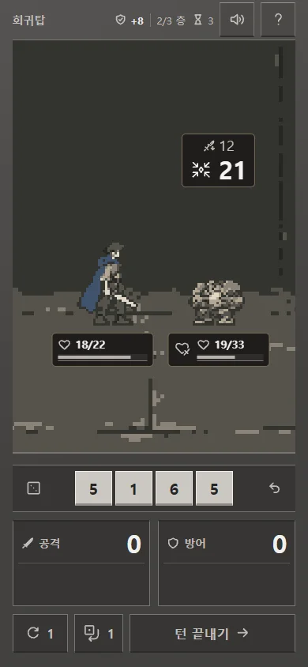
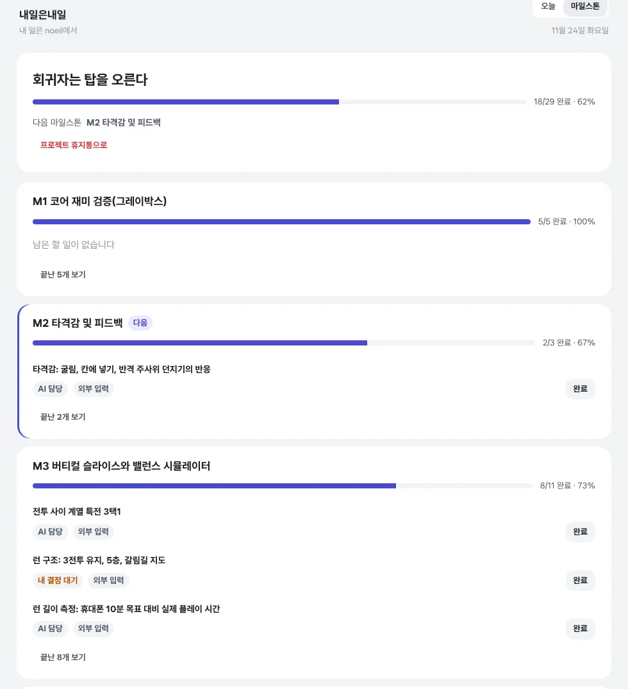

주사위 턴제 로그라이크, 웹 게임, 1인 개발
회귀자는
탑을 오른다
죽으면 처음으로 돌아오는 탑에서 주사위 세 개를 들고 다시 오릅니다. 적의 다음 공격을 읽고 주사위를 공격과 방어에 나눠 버텨 내는 턴제 로그라이크입니다.
- 기획부터 개발까지 마일스톤으로 관리
- 밸런스 QA는 AI 플레이어로 자동화
- 브라우저에서 바로 플레이
이런 게임입니다
한 턴, 해금, 한 판
슬레이 더 스파이어처럼 적의 다음 행동이 보이고, 다이시 던전처럼 주사위를 칸에 넣어 싸웁니다. 휴대폰으로 10분 안에 한 판을 끝내는 가벼운 로그라이크를 목표로 만들었습니다.

해금
같은 주사위 눈이 세 개 나오면 에고 주사위를 얻고, 1, 2, 3처럼 이어지는 눈 세 개를 맞추면 전투마다 한 번 더 굴릴 수 있는 재굴림 주사위가 열리는 등, 주사위 조합으로 새로운 능력을 해금하는 요소를 넣었습니다. 해금할수록 다음 층의 적도 함께 강해져서, 언제 족보를 노릴지가 또 하나의 판단이 됩니다.
한 판
런을 시작할 때 고른 특전 하나가 끝까지 효과를 내고, 일반 몹, 엘리트, 보스 순서로 3층을 오르며 남은 체력이 다음 층으로 이어집니다. 적마다 주사위를 잠그거나 얼리거나 빼앗는 기믹이 있고, 보스는 힘을 모은 뒤 치명 일격을 날리고 잠시 쓰러지는 패턴을 반복합니다.
기획부터 개발까지 마일스톤으로 관리했습니다
직접 만든 작업판 내일은내일
회귀자는 탑을 오른다는 2026년 4월 Unity판으로 기획을 시작했고, 11월 21일부터 웹으로 새로 개발했습니다. 개발은 직접 만든 작업판 내일은내일에 마일스톤 6개, 할 일 29개로 나눠 올리고, 끝날 때마다 표시하며 진행했습니다.
- 기획서규칙, 수치, 결정 연표
- 마일스톤내일은내일에 M1~M6, 할 일 29개
- 개발층마다 웹에 올려 링크로 확인
- 밸런스 QAAI 플레이어로 수천 판
- 플레이 판정직접 해 보고 다음 층 결정

| 마일스톤 | 끝나면 | 지금 |
|---|---|---|
| M1 코어 재미 검증(그레이박스) | 그래픽 없이 규칙만으로 한 판이 돌고, 또 하고 싶은지 판정 | 5/5 |
| M2 타격감 및 피드백 | 굴림, 놓기, 타격의 반응 연출 | 2/3 |
| M3 버티컬 슬라이스와 밸런스 시뮬레이터 | 3전투 런, 해금, 특전, 적 기믹을 한 판으로 완성하고 시뮬레이터로 검증 | 8/11 |
| M4 메타 진행 | 런 뒤 새 특전과 아이템 해금(메타 진행) | 1/4 |
| M5 아트, 사운드 적용 및 최적화 | 픽셀 아트, 사운드, 첫 화면 로딩 속도 | 2/4 |
| M6 포트폴리오 패키징 | 이 페이지와 플레이 영상 | 0/2 |
밸런스 QA를 사람 손에서 AI 플레이어로 옮겼습니다
직접 플레이, 시뮬레이터, AI 플레이어
문제
주사위 게임은 운이 커서, 몇 판 해 봐서는 지금 규칙이 쉬운지 어려운지 알 수 없습니다. 시작 특전 6개와 적 8종의 조합마다 난이도가 달라서, 수치 하나를 고칠 때마다 확인할 판이 크게 늘었습니다.
- 직접 플레이처음에는 직접 해 보며 밸런스를 봤습니다. 수치를 고칠 때마다 같은 판을 다시 해야 해서 금방 한계가 왔습니다.
- 밸런스 시뮬레이터게임 규칙을 화면과 떼어, 화면 없이 수백 판을 돌리는 시뮬레이터를 설계했습니다. 같은 시드면 같은 판이 나와 고치기 전후를 바로 비교합니다.
- AI 플레이어사람처럼 판단하는 AI 플레이어를 붙여, 특전과 적 조합마다 수천 판을 돌리고 그 결과로 적 체력과 공격력을 조정했습니다.
시뮬레이터로 찾은 것: 다시 굴리기 필수 문제
첫 전투를 같은 조건으로 512판씩 돌리니, 다시 굴리기를 안 쓰면 214판, 상황에 맞춰 쓰면 482판을 이겼습니다. 다시 굴리기가 사실상 필수 행동이었습니다. 이를 막지 않고 기본 조작으로 정했습니다.
시뮬레이터로 확인한 것: 한쪽 몰빵은 통하지 않음
주사위를 전부 공격에 넣으면 512판 중 28판, 전부 방어에 넣으면 2판만 이겼습니다. 공격과 방어를 나누는 판단이 게임의 중심에 남아 있습니다.
AI 플레이어로 맞춘 난이도 곡선
층마다 목표 승률을 먼저 정하고, AI 플레이어가 특전을 골라 4,096번 런을 돈 결과로 맞췄습니다. 색칠한 칸이 목표 승률입니다.
남은 문제: 보스전이 목표(6~7턴)보다 짧게 끝납니다(평균 5.8턴).
재미는 직접 판정했습니다
AI 플레이어는 승패와 판 길이만 잽니다. 재미는 빌드마다 직접 해 보고 판정해, 세 번에 걸쳐 고쳤습니다.
"일단 재미는 있어."
"일단 전투가 처음부터 너무 길어."
- 적 예고 문구가 길어 긴장감이 떨어져서, 예고를 아이콘과 숫자만으로 바꿨습니다.
- 성장하는 재미가 약해서, 야추 다이스 족보처럼 주사위 조합으로 능력을 해금하는 요소를 넣었습니다.
- 첫 전투가 길고 적이 공격만 해서 지루했기 때문에, 첫 전투를 줄이고 적 기믹 9종과 보스 패턴을 추가했습니다.
- 한 번 쓰고 끝나는 시작 특전이 와닿지 않아서, 런 내내 효과가 이어지는 특전 6종으로 바꿨습니다.
역할과 작품 정보
내가 정한 것, AI로 짠 것, 내가 확인한 것
- 내가 정한 것
- 주사위만 쓰는 전투, 야추 다이스식 해금, 다시 굴리기를 기본 조작으로 두기, 밸런스 QA 방식, 하지 않을 것(여러 재화와 메뉴)
- AI로 짠 것
- 게임 코드(Phaser 3, TypeScript), 밸런스 시뮬레이터와 AI 플레이어, 적과 특전 수치의 초기값(Codex). 그래픽과 사운드(웹 ChatGPT로 생성)
- 내가 확인한 것
- 밸런스 리포트를 보고 고칠 것 고르기, 빌드마다 직접 플레이 판정(세 번)
- 만든 사람
- 이주형. 팀원 없음
- 기간
- 기획 2026년 4월(Unity판)부터, 웹 리메이크 개발 2026-11-21부터
- 단계
- 브라우저에서 바로 하는 프로토타입. 3층 런 한 판까지
- 쓴 도구
- Phaser 3, TypeScript, Vite, GitHub Pages, Codex, 내일은내일
한계
아직 안 된 것
- 실제 플레이어 데이터는 없습니다.
- 런이 끝난 뒤 새 특전과 아이템을 해금하는 메타 진행은 설계 중입니다.
- 보스전이 목표보다 짧습니다. 층 사이 보상으로 맞출 계획입니다.
- 플레이 영상이 아직 없습니다.
더 자세히
기술 정보
도구와 구조
기술 정보
도구와 구조| 엔진과 언어 | Phaser 3.90, TypeScript 5.9, Vite 7.3 |
| 구조 | 규칙 코드와 화면 코드를 분리. 시드를 넣으면 같은 판 재현 |
| 배포 | GitHub Actions에서 시험과 빌드를 통과하면 GitHub Pages에 올림. 로그인 없이 열림 |
| 테스트 | 자동 테스트 85개(규칙, 해금, 적, 시드 재현) |
| 마일스톤 관리 | 내일은내일. 볼트의 할 일 원장을 한 시간마다 가져옴 |
| 기준 커밋 | dafe1b8db7f0328f9e509c05e36f0385001ac911 |
| 이전 판 | Unity Android 판과 강화학습 밸런스 실험 |